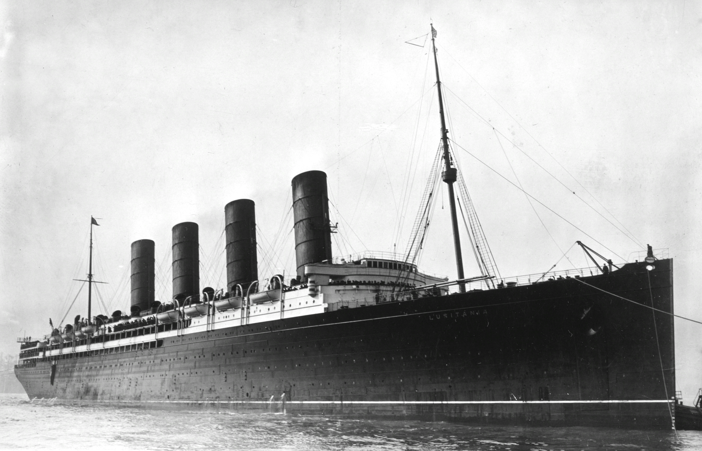
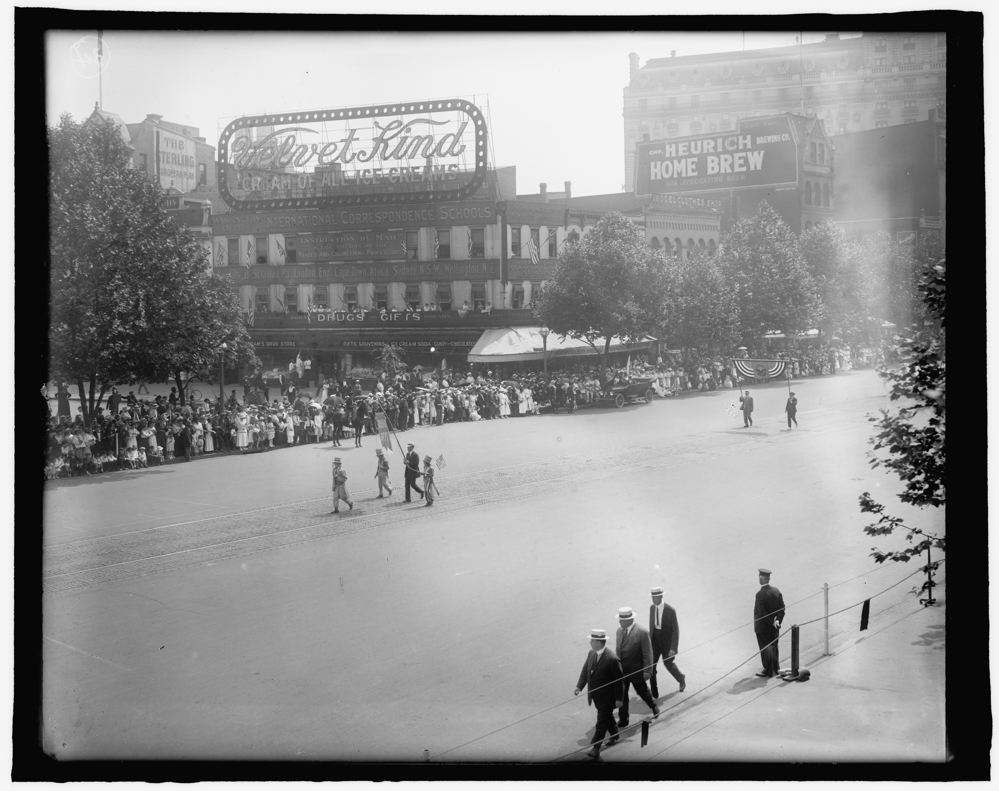
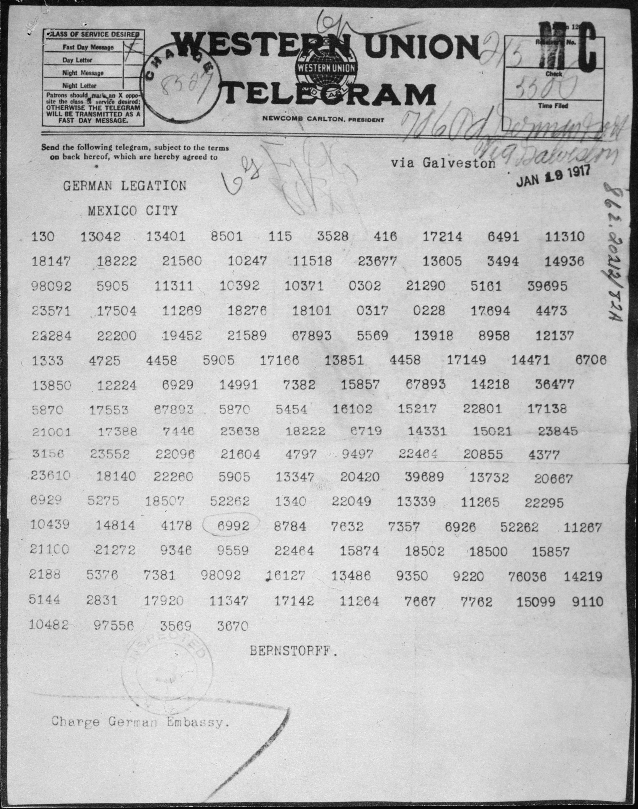
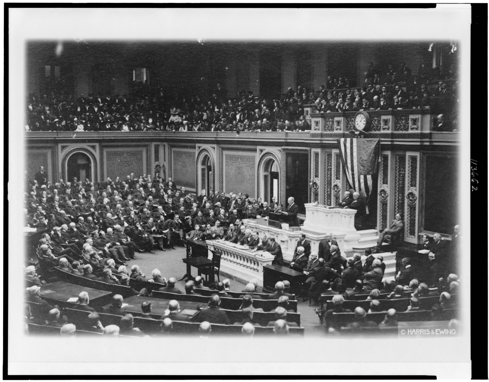

Directions: Work through all five stations in order. Each station holds one link in the chain from declared neutrality in 1914 to a declaration of war in April 1917. For each link, record what happened and what it changed. After the stations, place the five links on one timeline and defend the link you judge decisive.
Source: Photograph by George Grantham Bain, Library of Congress; account summarized from the lesson reading.

On May 7, 1915, the German submarine U-20 torpedoed the British passenger liner Lusitania off Ireland. The liner sank in eighteen minutes. Nearly 1,200 people died, including 128 Americans. Germany answered American protests with two facts of its own: the cargo had included rifle cartridges and other munitions, and the German embassy in Washington had published a warning to travelers in New York newspapers on the day the ship sailed. President Wilson answered with diplomatic notes, not war. His notes demanded that Germany disavow the sinking, make reparation, and prevent any repetition.
1. Each government treated different facts as decisive. Name the fact the United States treated as decisive and the two facts Germany treated as decisive, and state what each fact was meant to prove.
2. Wilson answered a sinking that killed 128 Americans with notes rather than a break in relations or a war message. Give two reasons the evidence in this station supports for that choice.
Source: German note of May 4, 1916, as quoted in the memorandum of Secretary of State Robert Lansing, May 5, 1916, in Papers Relating to the Foreign Relations of the United States, 1914 to 1920, Supplement Volume I (Office of the Historian, U.S. Department of State).
On March 24, 1916, a German submarine torpedoed the French passenger steamer Sussex in the English Channel, injuring several Americans. Wilson warned Germany that the United States would break diplomatic relations unless such attacks ended. Germany's answer of May 4, 1916, the Sussex Pledge, announced new orders to its submarine forces:
"In accordance with the general principles of visit and search and the destruction of merchant vessels, recognized by international law, such vessels, both within and without the area declared a naval war zone, shall not be sunk without warning and without saving human lives unless the ships attempt to escape or offer resistance."
The same note carried a condition. Germany expected the United States to press Britain to observe international law as well, and it reserved complete freedom of decision if that effort failed. German submarines generally observed the pledge for the rest of 1916.
1. State exactly what Germany gave up in this order, and the one exception it kept.
2. Why did the condition attached to the note make the pledge weaker than the quoted order first makes it sound? Answer from the text of the station.
Source: Photograph by the National Photo Company, Washington, D.C., 1916, Library of Congress; account summarized from the lesson reading.

Through 1915 and 1916, preparedness societies organized parades like this one, and former president Theodore Roosevelt campaigned for a far larger army and navy. At Plattsburg, New York, businessmen and professionals paid their own way to train as reserve officers. Critics answered that a buildup would make war more likely, not less, and that the country was in no danger of invasion. Congress moved in June 1916: the National Defense Act provided for a larger regular army and a stronger National Guard, and a naval act funded a three-year shipbuilding program. The regular army still numbered only about 100,000 men, and the new ships existed only as appropriations.
1. What did preparedness supporters say the submarine crisis proved, and what did their critics answer? Give both positions as the station states them.
2. A parade is evidence of opinion, not of strength. Using the figures in this station, state what had actually changed about American military power by the end of 1916, and what had not.
Source: Arthur Zimmermann, Zimmermann Telegram, 1917 (English translation, Ambassador Page's February 24, 1917 cable; National Archives), as carried in full in the TPSP source bank. The quotation below is verbatim; the cut is marked and explained.

"We intend to begin on the first of February unrestricted submarine warfare. We shall endeavor in spite of this to keep the United States of America neutral. In the event of this not succeeding, we make Mexico a proposal of alliance on the following basis: make war together, make peace together, generous financial support and an understanding on our part that Mexico is to reconquer the lost territory in Texas, New Mexico, and Arizona. ... Please call the President's attention to the fact that the ruthless employment of our submarines now offers the prospect of compelling England in a few months to make peace. Signed, ZIMMERMANN"
The cut marked by the ellipsis removes the instructions for delivering the offer in secret and the suggestion that Mexico invite Japan to join. British intelligence intercepted and decoded the telegram; American newspapers published it on March 1, 1917, and Zimmermann admitted it was genuine two days later.
1. The offer to Mexico was conditional. What had to happen before Mexico was even to hear it, and why did Americans react as if the threat were immediate?
2. Why did Zimmermann put the submarine announcement and the Mexican alliance in the same message? What does the pairing show about what German leaders expected American entry to mean, and when they expected it?
Source: Woodrow Wilson, War Message to Congress, April 2, 1917, as carried in the TPSP source bank (edition named there: Miller Center); the address is also published by the American Presidency Project. Quotations are verbatim.

"Vessels of every kind, whatever their flag, their character, their cargo, their destination, their errand, have been ruthlessly sent to the bottom without warning and without thought of help or mercy for those on board, the vessels of friendly neutrals along with those of belligerents."
"The world must be made safe for democracy. Its peace must be planted upon the tested foundations of political liberty. We have no selfish ends to serve. We desire no conquest, no dominion."
Wilson spoke on April 2, 1917; the Senate voted for war on April 4 and the House on April 6. Three weeks earlier, revolution in Russia had forced Czar Nicholas II to abdicate.
1. Which German action does Wilson place at the center of his case, and what does he say in the first quotation to show that it was a war on neutrals, not only on Britain?
2. The second quotation adds a purpose that goes beyond defending ships. How did the fall of the czar in Russia make that purpose easier for Wilson to state honestly?
Place the five links on the timeline in the order they happened. For each one, write the date and what the link changed for the decisions that came after it.
| Link | Event | Date | What it changed |
|---|---|---|---|
| 1 | |||
| 2 | |||
| 3 | |||
| 4 | |||
| 5 |
Defend your verdict in a paragraph. Name the link you judge decisive, give the evidence from its station that makes it decisive, and answer the strongest case for one other link.
Which facts did each side treat as decisive? The United States treated the killing of noncombatant passengers, 128 of them Americans, on an unarmed liner sunk without warning as decisive; it proved, in the American argument, that submarine warfare as practiced broke the rules protecting civilian life. Germany treated the munitions in the cargo and the published warning to travelers as decisive; they were meant to prove the ship was a legitimate target and that passengers had boarded at their own risk.
Why notes rather than war? Any two supported by the station: the notes in fact extracted German pledges over the following year; the country had no army ready for a European war (Station 3: about 100,000 regulars); opinion in 1915 was outraged but not united for war; and a break in relations was a step Wilson could hold in reserve, as he did until February 1917.
What did Germany give up, and what exception did it keep? Germany gave up sinking merchant vessels without warning anywhere, inside or outside the declared war zone, and accepted a duty to save human lives before sinking a vessel. The exception: a ship that attempted escape or offered resistance could still be sunk.
Why was the pledge weaker than it sounded? The order read as a German concession, but the note attached a condition on the United States: Washington was expected to compel British observance of international law, and Germany reserved complete freedom of decision if it did not. The pledge was therefore reversible by Germany's own judgment, which is the ground Germany later stood on when it resumed unrestricted warfare in February 1917.
Both positions. Supporters argued the submarine crisis proved the country could be drawn into a great war while defenseless, so strength now was insurance. Critics answered that a buildup would make war more likely rather than less, and that no enemy threatened invasion of the United States.
What had changed, and what had not? Changed: the law and the money. The National Defense Act of June 1916 authorized a larger regular army and a stronger National Guard, the naval act funded a three-year building program, and officer training at camps such as Plattsburg had begun. Not changed: actual strength in hand. The regular army still stood at about 100,000 men, and the new fleet was an appropriation, not ships in the water. Preparedness in 1916 was a decision and a start, not a finished force.
A conditional offer, an immediate reaction. Mexico was to hear the offer only if Germany's submarine campaign failed to keep the United States neutral, that is, only once war between Germany and the United States was certain. Americans reacted immediately because the submarine campaign had already resumed on February 1, because three American ships were sunk in March, and because the offer named American territory, Texas, New Mexico, and Arizona, as the price of the alliance. Zimmermann's public admission on March 3 removed the defense that the message was a forgery.
Why pair the two subjects in one message? The alliance was insurance for the submarine decision. German leaders expected unrestricted warfare to bring the United States in eventually, and they planned for Mexico, and possibly Japan, to occupy American attention at home while submarines settled the war against Britain within months. They expected American entry to be slow to take effect in Europe.
The center of Wilson's case. The resumed unrestricted submarine campaign. In the first quotation he stresses ships "of every kind, whatever their flag," including "the vessels of friendly neutrals," sunk "without warning," which recasts a German weapon against British trade as a war on all neutral nations and on the law of the sea itself.
How did the czar's fall help the democracy argument? Until March 1917 the Allies included czarist Russia, Europe's most autocratic great power, so an American war for democracy would have been fought alongside an empire that denied its own people a voice. The provisional government that replaced Nicholas II removed that contradiction and let Wilson present the war as democracies against empires without the obvious exception sitting in his own coalition.
Timeline, in order: 1. The Lusitania sinking, May 7, 1915. 2. The Sussex Pledge, May 4, 1916, the standard Germany would later abandon. 3. Preparedness, 1915 to 1916 (students may place it second if they date it from the movement's start in 1915; accept either position with the date defended). 4. The Zimmermann Telegram, sent January 1917, published March 1, 1917. 5. The war message and declaration, April 2 to 6, 1917. The resumption of unrestricted submarine warfare on February 1, 1917 belongs between links 3 and 4; students who name it as the decisive link in the paragraph should be credited, since the stations present it inside Stations 4 and 5.
Full credit should be awarded if the student: